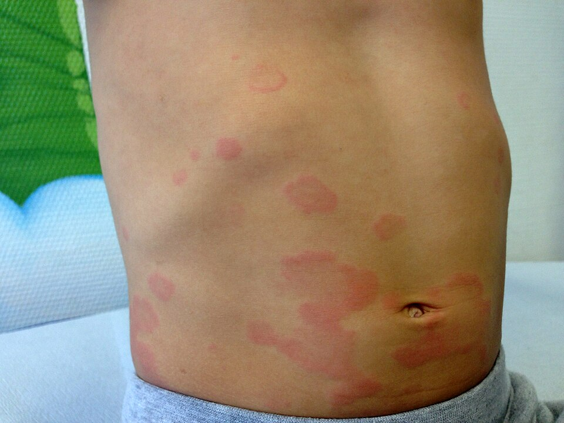
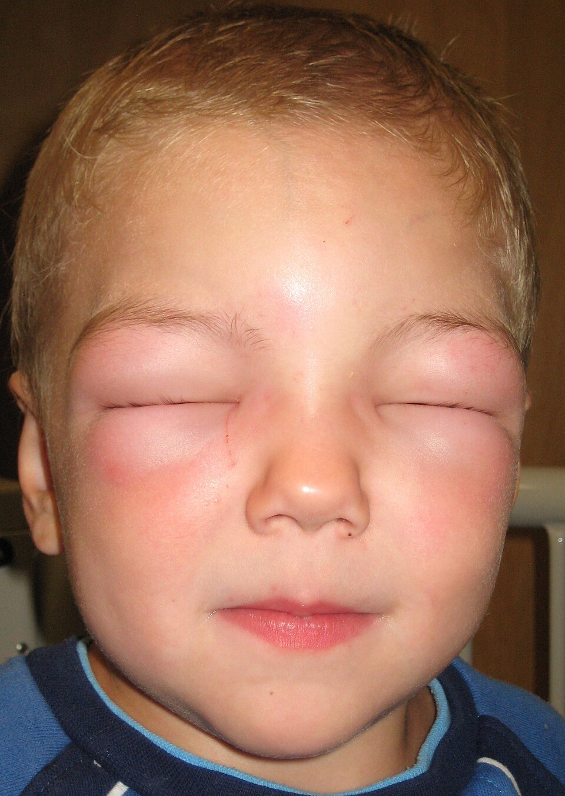

衛教目錄 › 皮膚 › 蕁麻疹
蕁麻疹
孩子身上突然冒出一塊塊紅紅、腫起來、很癢的「膨疹」，幾個小時後消失，又在別的地方出現。看起來很嚇人，但兒童的急性蕁麻疹大多是病毒感染引起，通常幾天到幾週內會好。真正要注意的，是合併呼吸困難或昏沉的過敏性休克。
< 24 小時單一塊膨疹通常在一天內消失、不留痕跡
6 週超過 6 週稱為慢性蕁麻疹
第二代抗組織胺是所有蕁麻疹的第一線用藥
1蕁麻疹長什麼樣子？

Gzzz／Wikimedia Commons／CC BY-SA 4.0，已縮小

James Heilman, MD／Wikimedia Commons／CC BY-SA 3.0，已縮小
- 膨疹：隆起、紅色或膚色、中間可能較淡，很癢；大小從蚊子叮到手掌大都有。
- 會移動：單一塊通常在30 分鐘到 24 小時內消失，不留痕跡，但會在別處冒出新的 [1]。
- 血管性水腫：超過一半的蕁麻疹病人曾合併出現，以腫為主，比較不癢 [1]。
- 拍照記錄：膨疹來去很快，看診時常已經消失，請用手機拍下來給醫師看 [1]。
2常見原因
🤒 病毒感染（最常見）
感冒、腸胃炎等病毒感染期間或之後 [1]。可能同時有發燒，是兒童急性蕁麻疹最常見的原因。
感冒、腸胃炎等病毒感染期間或之後 [1]。可能同時有發燒，是兒童急性蕁麻疹最常見的原因。
🥜 食物過敏
通常在吃下數分鐘到 2 小時內出現，可能合併嘴唇腫、嘔吐、咳嗽；常見如蛋、牛奶、花生、堅果、蝦蟹、魚、小麥。
通常在吃下數分鐘到 2 小時內出現，可能合併嘴唇腫、嘔吐、咳嗽；常見如蛋、牛奶、花生、堅果、蝦蟹、魚、小麥。
💊 藥物
抗生素、退燒止痛藥（如 ibuprofen 等非類固醇消炎藥）。
抗生素、退燒止痛藥（如 ibuprofen 等非類固醇消炎藥）。
🐝 蚊蟲叮咬
蜜蜂、虎頭蜂等螫傷。
蜜蜂、虎頭蜂等螫傷。
🧊 物理刺激
抓、壓、冷、熱、流汗、日曬等，會固定引起膨疹（誘發性蕁麻疹）。
抓、壓、冷、熱、流汗、日曬等，會固定引起膨疹（誘發性蕁麻疹）。
❓ 找不到原因
很常見，尤其是反覆發作的慢性蕁麻疹。
很常見，尤其是反覆發作的慢性蕁麻疹。
一般不需要做大範圍的過敏原檢查 [1]。如果每次發作前都吃了同一種食物，請記下來和醫師討論。
3出現這些情形，立即急診（可能是過敏性休克）
蕁麻疹＋下列任何一項 → 立刻打 119 或到急診
- 呼吸：喘、咻咻聲、一直咳、喉嚨緊、聲音沙啞、吞嚥困難、流口水
- 腫脹：舌頭、喉嚨腫起來
- 循環：臉色蒼白、嘴唇發紫、全身無力軟軟的、昏沉、意識不清、昏倒
- 腸胃：反覆嘔吐、劇烈肚子痛（尤其在吃東西或被蜂螫之後）
已經有醫師開立腎上腺素自動注射筆的孩子，請立即注射在大腿外側，再送醫 [6]。抗組織胺不能取代腎上腺素。
4居家照顧
- 冷敷：用冰涼的毛巾敷在癢的地方，可以止癢。
- 寬鬆、透氣的衣服，避免鬆緊帶、皮帶勒得太緊。
- 洗溫水澡，不要泡熱水、不要用力搓洗；避免過熱和大量流汗。
- 剪短指甲，減少抓破皮。
- 避開可能的誘發物：暫時避免懷疑的食物或藥物；ibuprofen 等消炎止痛藥可能讓蕁麻疹變嚴重，發燒時改用 acetaminophen [1]。
- 不需要因為蕁麻疹就自己大範圍忌口，以免營養不足。
5抗組織胺怎麼吃？
- 第二代抗組織胺是首選，例如 cetirizine、levocetirizine、loratadine、desloratadine、fexofenadine。比較不會嗜睡，也不影響上課學習 [1]。
- 第一代抗組織胺（很容易想睡的那種）國際指引已不建議作為兒童的第一線用藥，可能影響注意力與學業表現 [1]。
- 規則吃，不要癢了才吃：在膨疹還在冒的期間每天吃，通常比需要時才吃控制得更好；症狀消失後再吃幾天，由醫師決定何時停。
- 醫師可能加量：慢性蕁麻疹控制不好時，醫師可能把劑量提高到一般劑量的 2–4 倍，這是指引建議的用法，請不要自行加量 [1]。
- 口服類固醇只在嚴重發作時短期使用（幾天，最多約 10 天），不建議長期吃；擦的類固醇藥膏對蕁麻疹沒有幫助 [1]。
6反覆超過 6 週：慢性蕁麻疹
- 大多數孩子找不到外在原因，常和身體免疫系統的反應有關，不是吃錯東西 [1,2]。
- 好消息是：孩子的慢性蕁麻疹對抗組織胺的反應比大人好，不少孩子在 1–2 年內會自己好 [2]。
- 治療目標是完全沒有症狀，讓孩子睡得好、正常上學 [1]。
- 記錄症狀日記：每天記錄膨疹多寡和癢的程度、有沒有腫，回診時給醫師調整藥物（醫師可能用 UAS7 分數評估）[1]。
- 抗組織胺加量後仍控制不好，醫師可能轉介過敏免疫科，考慮生物製劑等治療 [1,3]。
7家長常見的疑問
- 會傳染嗎？蕁麻疹本身不會傳染；如果是病毒感染引起，傳染的是病毒。
- 一定是食物過敏嗎？不一定。兒童急性蕁麻疹最常見的原因是病毒感染；慢性蕁麻疹由食物過敏引起的極少 [1]。
- 膨疹中間變得暗紫色，是不是很嚴重？孩子常見一種環狀、中間帶暗紫色的蕁麻疹，外觀嚇人但通常良性；如果單一塊超過 24 小時不消、留下瘀青，或合併關節腫痛，請回診。
- 一直反覆，是不是要驗過敏原？大多數情況不需要，醫師會依病史決定是否檢查 [1]。
8何時要回診？
- 吃了抗組織胺仍然很癢、影響睡眠或上學
- 單一塊膨疹超過 24 小時不消、留下瘀青或色素，或有灼熱痛
- 合併關節腫痛、發燒（尤其在吃抗生素 1–3 週後）
- 只有腫（血管性水腫）沒有膨疹、反覆腹痛，或家人有類似情形
- 反覆發作超過 6 週
- 懷疑和特定食物、藥物或蜂螫有關，需要評估是否要準備腎上腺素
近五年實證重點（2026/11 整理）
- 2026 國際指引改版：維持「急性 ≤ 6 週／慢性 > 6 週」與「自發性／誘發性」分類；強烈建議急性自發性蕁麻疹不需常規檢查 [1]。
- 治療階梯：標準劑量第二代 H1 抗組織胺 → 加量至最多 4 倍 → 加上 omalizumab；新增建議 dupilumab 與 remibrutinib（BTK 抑制劑）作為抗組織胺高劑量無效的慢性自發性蕁麻疹（CSU）加用選項；仍無效再考慮 ciclosporin [1,4,5]。
- 從治療流程圖中移除：白三烯素拮抗劑、hydroxychloroquine、methotrexate、dapsone 因證據不足，新版治療流程圖不再列入（醫療資源受限時仍可個別考慮）；H2 拮抗劑則無法給出建議 [1]。
- 類固醇：強烈不建議長期使用全身性類固醇；急性惡化可短期救援（見類固醇的使用）[1]。
- 兒童：建議沿用同一套治療流程，但需依核准年齡、兒童經驗與體重調整；不建議第一代抗組織胺為第一線 [1]。兒童 CSU 對 H1 抗組織胺反應較成人好，兩年內緩解率高；omalizumab 對抗組織胺無效者效果佳 [2,3]。
- CSU 內在型分類：第 I 型自體免疫（自體過敏，IgE 抗自身抗原）與第 IIb 型（活化肥大細胞的 IgG 自體抗體）；後者常見 CRP 上升、嗜酸性球與嗜鹼性球偏低，對 omalizumab 反應較慢 [1]。
分類
| 類型 | 內容 |
|---|---|
| 急性自發性蕁麻疹 | ≤ 6 週；兒童最常與上呼吸道等病毒感染相關，也可由食物、藥物（抗生素、NSAIDs）、蟲螫引起 [1] |
| 慢性自發性蕁麻疹（CSU） | > 6 週，無明確誘發因子；膨疹、血管性水腫或兩者 [1] |
| 慢性誘發性蕁麻疹（CIndU） | 症狀性皮膚劃紋症（最常見）、冷、延遲性壓力、熱、日光、振動；膽鹼性、接觸性、水源性 [1] |
檢查
- 急性：詳細病史（感染、食物、藥物、蟲螫）即可，不建議常規檢查；只有懷疑 IgE 媒介食物過敏或藥物（特別是 NSAIDs）過敏時，才安排過敏檢測或激發試驗 [1]。
- CSU 基本檢查：CBC 含白血球分類、CRP 和／或 ESR；專科可加測總 IgE、IgG anti-TPO；其他依病史與理學檢查決定，特別是病程長或控制不佳者 [1]。
- 不建議大範圍、昂貴的病因篩檢 [1]。IgE 食物過敏極少是 CSU 的原因；檢測陽性多半代表共病而非病因 [1]。
- CIndU：以激發試驗診斷（如劃紋、冰塊試驗、運動），並以閾值測定與 UCT 追蹤 [1]。
- 疾病活性與控制：每次回診評估；膨疹用 UAS7（0–42 分），血管性水腫用 AAS，控制用 UCT／AECT [1]。
鑑別診斷
| 疾病 | 區分線索 |
|---|---|
| 過敏性休克 | 蕁麻疹合併呼吸、循環或持續腸胃症狀；立即 IM epinephrine [6] |
| 環狀蕁麻疹（urticaria multiforme） | 幼兒常見，環狀、中心暗紫，膨疹仍在 24 小時內移動；常合併手腳水腫；無黏膜糜爛、無標靶狀三層結構 |
| 多形性紅斑 | 固定的標靶狀病灶、可有水疱，持續數天至 1–2 週；常與 HSV、黴漿菌相關；可有黏膜侵犯 |
| 血清病樣反應 | 抗生素（如 cefaclor、amoxicillin）後 1–3 週；蕁麻疹樣疹合併發燒、關節腫痛 |
| 蕁麻疹性血管炎 | 單一病灶 > 24 小時、灼熱或痛、消退後留瘀斑或色素；需切片 [1] |
| 自體發炎疾病（如 CAPS） | 膨疹不太癢、合併反覆發燒、關節痛、結膜炎、倦怠；CRP 上升 [1] |
| 遺傳性血管性水腫（HAE） | 只有血管性水腫、沒有膨疹，抗組織胺與類固醇無效，反覆腹痛，家族史；測 C4、C1-INH 濃度與功能 [1,7] |
| 肥大細胞增生症 | 色素性斑丘疹，摩擦後膨起（Darier 徵象） |
| 昆蟲叮咬、丘疹性蕁麻疹 | 固定在暴露部位、中央有點狀叮咬、持續數天 |
治療階梯（2026 國際指引）
STEP 1標準劑量第二代 H1 抗組織胺所有類型蕁麻疹的第一線；CSU 建議規則服用 [1]
STEP 2加量至最多 4 倍2–4 週後評估；不建議混用不同抗組織胺、不建議超過 4 倍 [1]
STEP 3加上 omalizumab也建議：dupilumab、remibrutinib（依核准年齡）[1]
STEP 4ciclosporin對核准藥物無效或無法取得時；監測血壓與腎功能 [1]
急性惡化短期口服類固醇救援最多約 10 天；不建議長期全身性類固醇或長效注射劑型 [1]
兒童依核准年齡、體重調整；加量與後續選項在兒童研究較少，須審慎評估 [1]。
類固醇的使用
| 情況 | 2026 國際指引的建議 | 強度 |
|---|---|---|
| 慢性蕁麻疹長期使用全身性類固醇或長效注射劑型 | 強烈不建議：長期需要的劑量高，副作用無法接受 [1] | ↓↓（強烈反對） |
| 慢性蕁麻疹急性惡化 | 建議可考慮短期全身性類固醇救援 [1] | ↑（條件式建議） |
| 急性蕁麻疹 | 短期口服（最多約 10 天）可能縮短病程、降低活性，但缺乏設計良好的隨機試驗 [1] | 敘述性內容 |
| 外用類固醇 | 對蕁麻疹沒有幫助（腳底的延遲性壓力蕁麻疹可能例外，證據低）[1] | 敘述性內容 |
- 劑量：指引提到成人需 prednisone 等效 20–50 mg/天，並明確註明此劑量不適用於兒童；指引沒有提供兒童劑量 [1]。
- 兒童：指引強調短期類固醇在兒童「只能作為非常受限的措施」[1]。臨床上常用的做法是 prednisolone 約 0.5–1 mg/kg/天、使用數天（此為臨床常規，非指引建議），並同時規則使用第二代抗組織胺。
- 停藥後可能反彈：類固醇不改變病程，必須搭配規則的抗組織胺；需要反覆使用類固醇，代表控制不佳，應依治療流程升階（加量抗組織胺、轉介評估 omalizumab 等）[1]。
- 過敏性休克：類固醇只是輔助，不能延誤或取代 epinephrine [6]。
藥物劑量
| 藥物 | 適用年齡 | 標準劑量 | 備註 |
|---|---|---|---|
| 第二代 H1 抗組織胺（指引列有兒童療效與安全性資料者） | |||
| Cetirizine | ≥ 6 個月 | 6 個月–2 歲：2.5 mg QD 2–5 歲：2.5–5 mg QD ≥ 6 歲：5–10 mg QD | 可能輕微嗜睡。 |
| Levocetirizine | ≥ 6 個月 | 6 個月–5 歲：1.25 mg QD 6–11 歲：2.5 mg QD ≥ 12 歲：5 mg QD | |
| Desloratadine | ≥ 6 個月 | 6–11 個月：1 mg QD 1–5 歲：1.25 mg QD 6–11 歲：2.5 mg QD ≥ 12 歲：5 mg QD | |
| Loratadine | ≥ 2 歲 | 2–12 歲且 ≤ 30 kg：5 mg QD > 30 kg 或 ≥ 12 歲：10 mg QD | |
| Fexofenadine | ≥ 6 個月 | 6 個月–2 歲：15 mg BID 2–11 歲：30 mg BID ≥ 12 歲：60 mg BID 或 180 mg QD | 不易嗜睡；避免與果汁同服。 |
| Bilastine | ≥ 6 歲（≥ 20 kg） | 6–11 歲：10 mg QD ≥ 12 歲：20 mg QD | 空腹服用。 |
| Rupatadine | ≥ 2 歲 | 10–25 kg：2.5 mg QD > 25 kg：5 mg QD ≥ 12 歲：10 mg QD | 依國內劑型。 |
| 加量（Step 2） | 依個案 | 最多標準劑量的 4 倍 | 仿單外用法；兒童研究少，須告知家長 [1]。 |
| 抗組織胺高劑量無效的 CSU | |||
| Omalizumab（anti-IgE） | ≥ 12 歲（CSU） | 150 或 300 mg SC q4w | 反應不足可提高劑量或縮短間隔（仿單外）[1]。 |
| Dupilumab（anti-IL-4Rα） | 依國內仿單（美國核准 ≥ 12 歲 CSU） | 依體重：首劑 400–600 mg，之後 200–300 mg SC q2w | 2026 指引條件式建議 [1,5]。 |
| Remibrutinib（BTK 抑制劑） | 成人（依國內仿單） | 25 mg 口服 BID | 2026 指引條件式建議；兒童尚無資料 [1,4]。 |
| Ciclosporin | 專科使用 | 3–5 mg/kg/天 | 仿單外；監測血壓、腎功能 [1]。 |
| 急性惡化 | |||
| Prednisolone | — | 成人：prednisone 等效 20–50 mg/天，最多約 10 天 兒童：指引未提供劑量（見下方類固醇段落） | 不建議長期使用或長效注射劑型 [1]。 |
抗組織胺劑量依各藥國外仿單；國內各品項核准年齡與劑型可能不同。第一代抗組織胺（如 hydroxyzine、chlorpheniramine）不建議作為兒童第一線用藥 [1]。
過敏性休克處置
- Epinephrine 1 mg/mL：0.01 mg/kg 肌肉注射於大腿前外側（兒童最多 0.3 mg，青少年最多 0.5 mg），5–15 分鐘可重複 [6]。
- 自動注射筆：約 7.5–25 kg 用 0.15 mg，≥ 25 kg 用 0.3 mg（依產品與國內可取得品項）[6]。
- 平躺抬高下肢（呼吸困難者可坐姿）、給氧、建立靜脈管路並輸液；抗組織胺與類固醇為輔助，不可延誤或取代 epinephrine [6]。
- 觀察雙相反應；出院時開立自動注射筆、書面行動計畫並轉介過敏專科 [6]。
參考資料
- Zuberbier T, Ansari ZA, Abdul Latiff AH, et al. The international guideline for the definition, classification, diagnosis and management of urticaria. Allergy. 2026;81(8):2582–2632. doi:10.1111/all.70210 國際指引
- Ensina LF, Brandão L, Netchiporouk E, et al. Managing chronic urticaria in children: an update. Curr Allergy Asthma Rep. 2025;25(1):21. doi:10.1007/s11882-025-01202-z 兒科回顧
- Ensina LF, Brandão LS, Melo ACDB, et al. Chronic urticaria treatment challenges in children. Rev Paul Pediatr. 2024;43:e2024107. doi:10.1590/1984-0462/2025/43/2024107 兒科回顧
- Metz M, Giménez-Arnau A, Hide M, et al. Remibrutinib in chronic spontaneous urticaria. N Engl J Med. 2025;392(10):984–994. doi:10.1056/NEJMoa2408792 RCT
- Maurer M, Casale TB, Saini SS, et al. Dupilumab in patients with chronic spontaneous urticaria (LIBERTY-CSU CUPID): two randomized, double-blind, placebo-controlled, phase 3 trials. J Allergy Clin Immunol. 2024;154(1):184–194. doi:10.1016/j.jaci.2024.01.028 RCT
- Abrams EM, Alqurashi W, Fischer DA, et al. Anaphylaxis. Allergy Asthma Clin Immunol. 2024;20(Suppl 3):62. doi:10.1186/s13223-024-00926-3 回顧
- Pagnier A, Dermesropian A, Kevorkian-Verguet C, et al. Hereditary angioedema in children: review and practical perspective for clinical management. Pediatr Allergy Immunol. 2024;35(12):e14268. doi:10.1111/pai.14268 兒科回顧
文獻搜尋截至 2026 年 11 月。
本頁內容整理於 2026 年 11 月，供門診衛教與醫療人員參考，不能取代個別的診察與判斷。藥物劑量請以藥品仿單及最新指引為準。